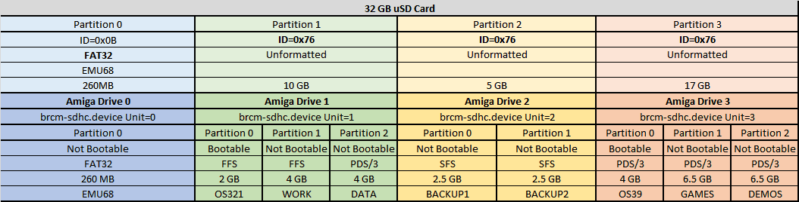
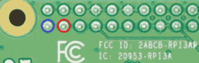

PiStorm Emu68 simple tutorial
Useful Emu68 programs:
SDCARD:
Partition for emu68 should be fat32 formated (Emu68 see's it as 0).
Minimum recommended size for the fat32 partition is ~260 MB.
Warning! Don't fill up fat32 partition >95% then Raspberry Pi will not boot!
Download latest Emu68-pistorm-yyyymmdd-build.zip
and extract all files to sdcard.
(next time it is enough to copy and replace Emu68.img from latest build)
copy kickstart.rom of your choice (for better performance)
(byteswapped also supported) to sdcard
change line in config.txt for example to initramfs kick32a1200.rom
(must match kickstart filename on sdcard exactly)
It's recommended to use a 1200 kickstart rom for better RAM support and features
Additional extra partitions's for Emu68:
make them a multiple of 504 MB for better performance.
create and set them to id 0x76 using your favourite partition tool.
Emu68 see's them as 1,2,3 (if you make three, which is max allowed)
| 0 | 1 | 2 | 3 |
| FAT32 |
0x76 |
0x76 |
0x76 |
Example of three 0x76 partitions that can be uses by Amiga OS.
Random example how to create 3 Amiga drives into 32 GB SDCARD:

Each of the 0x76 partitions are individual Amiga drives and each of them can hold multiple Amiga partitions.
Amiga harddrive setup:
change hdtoolbox, icon information, tooltypes from scsi.device to
brcm-sdhc.device then hdtoolbox will find them
sdcard guide
RTG:
Use latest emu68-vc4.card from Emu68-tools and copy to LIBS:Picasso96/
Setup Guide
In devs/monitors and tooltypes good defaults are(case sensitive):
VC4_SCALER=1
VC4_PHASE=128
VC4_KERNEL=1
VC4_KERNEL_B=333
VC4_KERNEL_C=333
cmdline.txt
consist only from one single text line..so no line breaks. Options in more detail
Memory
Limit mapped ARM memory to 2 GB(use if >2 GB ram on Pi):
limit_2g
z2 ram:
z2_ram_size= x (x=0 (new default), 1, 2, 4 or 8). Set lower if other Zorro II devices are installed in the system
Slow ram:
enable_c0_slow 0.5 MB
enable_c0_slow enable_c8_slow 1.0 MB
enable_c0_slow enable_c8_slow enable_d0_slow 1.5 MB
Use SLOW ram as CHIP(Uses memory in Expansion slot. Needs min. Agnus 8372A):
move_slow_to_chip JP2 in default position(no soldering of JP2 on the motherboard needed)
emu68-vc4.card
Set amount of VIDEO memory for emu68-vc4.card driver:
vc4.mem=16 (default). Set value to 0 to disable use of video driver
68040.library
Move VBR to end of FAST ram:
vbr_move
+ Slightly faster interrupt handling & fetching address through faster arm memory instead of slower chip ram
- Classic demos/games may not work
Miscellaneous
Disable fpu:
nofpu
Swap df0:
swap_df0_with_dfx (x=1,2 or 3)
brcm-sdhc.device
Disable switch to 50 MHz speed on SDCARD:
sd.low_speed
Change speed of SDCARD clock(will not work if sd.low_speed is also used):
sd.clock=50 (default). Value can be 50-200 MHz(>50 is overclocking).
Good values to experiment with (if data corruption) are: 100, 80, 75, 25
Set verbosity level of brcm-sdhc:
sd.verbose=x (x=0,1 or 2. Default is 0 = light debug)
Change sd.unit0 (partition0) behaviour of brcm-sdhc.device:
sd.unit0=ro read-only. This is the default
sd.unit0=rw read-write. Use with care!!!
sd.unit0=off hidden
Disable brcm-sdhc.device:
sd.disable
Debugging
Serial debug (2 GPIO pins):
debug disassemble async_log
(async_log option uses it's own CPU core for logging. Remove if not desirable)
921600 bps 8n1 (any ft232 should do)
Blue ground. Red (TX) to ft232 RX

For updates go to Michal Schulz Patreon
For nightly release's click here
For Michal Schulz twitch stream click here
Emu68 early game compatibility list
Can't get whdload to run?
test to set option NOMMU in s:whdload.prefs
Do Emu68 have working Pi Wi-Fi driver for Amiga network?
no, not yet (but planned for)
Red screen when starting Emu68(Mushashi PiStorm works fine)?
test another SDCARD
Can't get Kickstart 1.3 or lower to work?
Underclock using arm_freq=600 (to max 1200) in config.txt and kickstart will start every time
I use showconfig and the system crashes!
It's a bug in boards.library. Download temporary fix from discord here and wait for official release (in 2022) on
Aminet
Is there any way to transfer files fast to Emu68?
Copy files to the fat32 partition and afterwards mount it within Emu68 using fat95
or
Start WinUAE as administrator and add 0x76 partition(s) using Add Hard Drive button
How does one mount the Emu68 fat32 partition under Amiga using fat95?
Click here for more details
1) Copy fat95 to L
2) Do the following steps 3 → 6 or download ready-made file here and icon file here
3) Create a file and put the following text inside:
FileSystem = L:fat95
Flags = 0
MaxTransfer = 0x1fe00
LowCyl = 0
HighCyl = 0
Surfaces = 1
BlocksPerTrack = 1
Buffers = 100
StackSize = 8192
GlobVec = -1
Priority = 5
4) Add an icon to the file and change tooltypes to:
UNIT=0
DEVICE=brcm-sdhc.device
DOSTYPE=0x46415401
ACTIVATE=1
5) Set following to:
Default tool : C:Mount
Stack size : 4096
Start from : Workbench
6) Save
7) Click the icon to mount
Is there a ready to use Emu68 partitioned(fat32 + 0x76) image for my SDCARD?
Yes! Download from discord here. Win32DiskImager, BalenaEtcher, Rufus or other can be used to write it
How to build Emu68.img using Raspberry Pi?
Instructions
How to check if GPIO pins are ok on Raspberry Pi?
Click here for more details
1) Disconnect Raspberry Pi from Pistorm!
2) Insert SDCARD with working Raspberry Pi OS / Mushashi PiStorm
3) Stop PiStorm emulator (if it has been started during boot(sudo pkill emulator))
4) sudo apt -y install pigpio
5) wget http://abyz.me.uk/rpi/pigpio/code/gpiotest.zip
6) unzip gpiotest.zip
7) sudo pigpiod
8) ./gpiotest
9) press enter...should say: Failed user gpios:none
How to flash CPLD beta firmware 3.1?
Click here for more details
1) Download firmware RTL_Proto3_1_Beta.zip from discord and unzip it
2) Insert SDCARD (Raspberry Pi OS / Mushashi PiStorm) and power on Amiga
3) Stop PiStorm emulator (if it has been started during boot(sudo pkill emulator))
4) git clone https://github.com/captain-amygdala/pistorm.git beta31
5) cd beta31
6) sudo apt-get install openocd (skip if already installed)
7) transfer/copy bitstream.svf & EPM_240_bitstream.svf & maxv_bitstream.svf from unzipped file to folder /beta31/rtl
8) ./flash.sh
Day number: